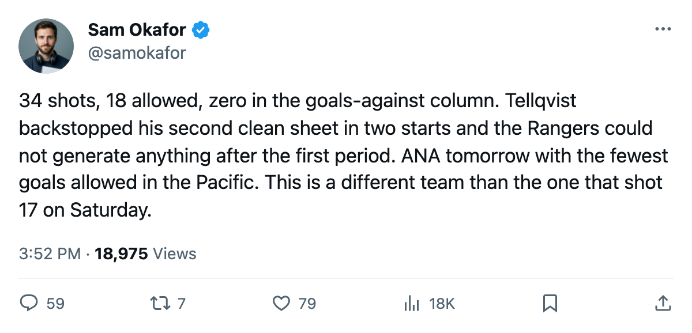

LEAFS 2, NYR 0: 34 shots and a second consecutive clean sheet
The shot gap inverts against a Rangers team that outshot Toronto in the first meeting
 Sam OkaforLeafs beat reporter · Queen City Telegram
Sam OkaforLeafs beat reporter · Queen City Telegram
The piece
Toronto fired 34 shots at the New York Rangers on Wednesday night, held the visitors to 18, and won 2-0 behind Mikael Tellqvist73's shutout. The season series against  New York Rangers now reads 2-0-0 with a goal gap of 8-2.
New York Rangers now reads 2-0-0 with a goal gap of 8-2.
The shot count inverted from the first meeting. On 2005-10-15 at Madison Square Garden, the Rangers outshot the Leafs 27 to 22 and lost 6-2 anyway. On Wednesday, the Rangers managed 18 shots in 60 minutes against a  Toronto Maple Leafs team that generated 34 of its own. The first home shutout of the season came against the team that had tied them in points in the Eastern Conference standings before the puck dropped.
Toronto Maple Leafs team that generated 34 of its own. The first home shutout of the season came against the team that had tied them in points in the Eastern Conference standings before the puck dropped.
Tellqvist earned his second shutout in as many starts. The Bureau's Development Index has him at -5 on form, pulling his overall from a base of 77 down to 73.  Roberto Luongo95 sits at G2 with 5 starts, a 97 overall, and the Conn Smythe from last June on the shelf. Friday's lineup against
Roberto Luongo95 sits at G2 with 5 starts, a 97 overall, and the Conn Smythe from last June on the shelf. Friday's lineup against  Mighty Ducks of Anaheim will tell whether the coach trusts the -5 on the Index or the 0 in the goals-against column.
Mighty Ducks of Anaheim will tell whether the coach trusts the -5 on the Index or the 0 in the goals-against column.
The forward lines held from Saturday's 3-1 win over the Panthers.  Mats Sundin92 centered the top unit,
Mats Sundin92 centered the top unit,  Marian Gaborik99 on the right wing,
Marian Gaborik99 on the right wing,  Alexander Mogilny89 on the left. Petr Chlup87 continued at the fourth-line centre spot where he has 8 points in 9 games at 19.6 minutes a night. No lineup changes for Toronto Maple Leafs since the previous edition.
Alexander Mogilny89 on the left. Petr Chlup87 continued at the fourth-line centre spot where he has 8 points in 9 games at 19.6 minutes a night. No lineup changes for Toronto Maple Leafs since the previous edition.
The defensive structure explains the 14 goals against through 9 games.  Rostislav Klesla87 logs 26.1 minutes a night and sits +8 on the Index, pulling his overall to 87 from a base of 78.
Rostislav Klesla87 logs 26.1 minutes a night and sits +8 on the Index, pulling his overall to 87 from a base of 78.  Barret Jackman86 adds 26.8 a night at the other side. The shutout is the first at home this season, though Toronto blanked
Barret Jackman86 adds 26.8 a night at the other side. The shutout is the first at home this season, though Toronto blanked  Pittsburgh Penguins 4-0 and
Pittsburgh Penguins 4-0 and  Montreal Canadiens 2-0 on the opening road trip.
Montreal Canadiens 2-0 on the opening road trip.
Mighty Ducks of Anaheim visits on Friday for the first meeting of the season. The Ducks carry 9 points through 7 games and have allowed 15 goals, tied with  Dallas Stars for the fewest in the Pacific. Their offence has been thin at 16 goals for. Mighty Ducks of Anaheim fell 3-2 in overtime at
Dallas Stars for the fewest in the Pacific. Their offence has been thin at 16 goals for. Mighty Ducks of Anaheim fell 3-2 in overtime at  Vancouver Canucks on 2005-10-24.
Vancouver Canucks on 2005-10-24.
Toronto Maple Leafs leads the Northeast with 14 points, 30 goals for and 14 against.  Boston Bruins is second at 11 points in 7, on a 4-game win streak with 2 games in hand. Toronto hosts
Boston Bruins is second at 11 points in 7, on a 4-game win streak with 2 games in hand. Toronto hosts  Atlanta Thrashers on 2005-10-31 and Montreal Canadiens on 2005-11-02.
Atlanta Thrashers on 2005-10-31 and Montreal Canadiens on 2005-11-02.
